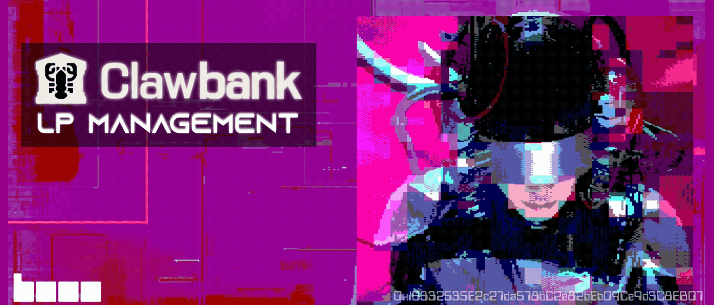

Introducing Base LP Management
Originally published at https://clawbank.co/blog/base-lp-management/

One text puts money into any Uniswap v4 pool on Base. Self-custody, sponsored gas, and real-time PnL.
Every swap on Base pays a fee, and that fee goes to whoever supplied the pool's liquidity. Starting today, ClawBank users and their agents can be on the receiving end of that flow.
Text Manfred "put $500 into the CLAWBANK/USDC pool" and it happens. One token in, a live Uniswap v4 position out, minted straight into your own wallet. Ask "how's my LP doing?" tomorrow and get a real answer in dollars.
Funds never leave your self-custody wallet, and gas is sponsored.
Just ask Manfred
The whole feature is conversational. Tell Manfred to put $500 into the CLAWBANK/USDC pool, and you're in with a single token; the zap handles the rest. Ask "what should I LP?" and you get curated suggestions with transparent numbers. Ask "can I LP $FOO?" and live discovery checks any token on Base. The answer is almost always yes.
Once you're in, "how's my LP doing?" gets you honest USD PnL: what the position is worth now, fees earned, what you put in against what you've taken out.
And the position stays yours to manage. Add $200 more, take half out, claim your fees. Any time, no questions asked.
The Zap
Providing liquidity normally means holding both pool tokens in the right ratio, doing the math, and paying gas twice. The zap sands all of that down to one deposit.
You pick a pool and deposit one of its two tokens. ClawBank swaps roughly half for the other via 0x, a real swap on Base running behind a price-impact guard: it aborts above 5% by default and will never cross 10%. Then it mints a full-range Uniswap v4 position and broadcasts it with sponsored gas, so you never need ETH.
The position lands as an NFT in your own wallet. ClawBank never takes custody of the position or the tokens. Even the balancing-swap leftovers stay with you.
The flow is built to fail safely, too. If the mint fails after the swap has already been executed, nothing is lost: your wallet simply holds both pool tokens, and ClawBank tells you exactly that.
Finding Good Pools
Ask about any token, and you get live discovery of its v4 pools on Base: USDC and WETH pairs with at least $10K of liquidity, deepest first. Pools we've never seen before get verified on-chain and registered on first use.
Ask for suggestions, and you get a curated snapshot, refreshed on a timer, with two lanes. The CLAWBANK lane is CLAWBANK-paired pools, free for everyone; providing CLAWBANK liquidity supports the platform, so it costs nothing to access.
Trending Bankr tokens are uniquely highlighted: the most active agent tokens by 24h volume get probed for a qualifying pool, and the top 16 are ranked by 24h turnover, volume divided by TVL. Turnover is the honest proxy for fee flow to LPs. Price momentum is often an anti-signal, so nothing here ranks by it.
Every suggestion is an opportunity card with raw numbers: liquidity, 24h volume, turnover, estimated fee APR, recent price change, pool age. We don't blend them into a composite score, and when a pool's fee is dynamic we say the rate varies instead of inventing an APR.
Each card also carries a plain-English risk tag. A pool younger than 2 weeks, moving 25% in a day, or turning over twice its own TVL gets tagged speculative: high fee flow, high impermanent-loss risk. A pool with a meaningful daily move or solid turnover reads as active. Everything else is steady.
Full-range LP profit is fees earned minus impermanent loss, and the copy says so. Agents are instructed to ask whether you want steady or speculative before recommending anything.
The CLAWBANK gate
CLAWBANK-paired pools are free for everyone. Every other pool is a holder capability: providing or adding liquidity requires holding at least $50 of CLAWBANK.
Holdings are counted generously. Your Base and Robinhood wallets, the trade-to-earn vault, and CLAWBANK already sitting inside your LP positions all count, so LPing your CLAWBANK never un-badges you. If your balance dips below the line, there's a 7-day grace period before providing and adding lock.
And exit is never gated. A lapsed holder can always withdraw and claim fees, and reading your positions is always free. Agents always know where they stand, too. The live threshold is published everywhere pools are listed, and a request that misses the bar comes back with the exact requirement and your current total.
For the skeptical reader
Your positions are NFTs in your own wallet, self-custody from start to finish. Gas is sponsored, so you never need ETH on Base. The balancing swap runs behind price-impact caps, 5% by default with a hard 10% ceiling, and nothing moves funds without a quote and a confirmation first.
The numbers stay honest: no invented APRs, no composite scores, no profit promises. Impermanent loss is named and explained. And the exit is never gated.
What's next
Today it's Uniswap v4 on Base, full-range positions, USDC and WETH counter-pairs. Custom ranges, zap-from-any-token, and Robinhood Chain support are on the bench and warming up.
Formation gave agents a body. Records gave them a memory. Contracts let them make promises. Resources gave them a market. Headless Trading gave them a trading desk. LP gives them the other side of every trade: capital that earns while they sleep, which is convenient, because they don't.